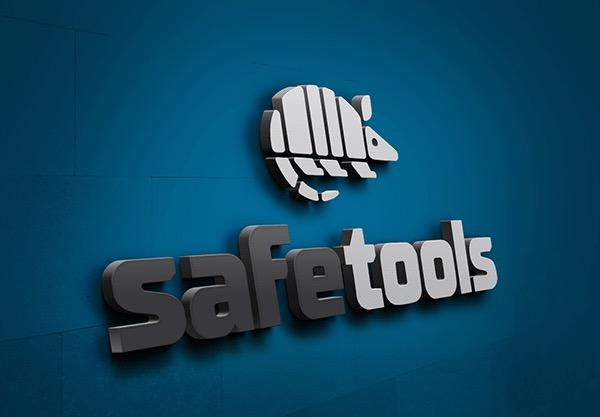

Safetools – Branding e Social Media
A Safetools é uma marca portuguesa de equipamentos de proteção individual, fundada em 2024, com o objetivo de oferecer soluções seguras e inovadoras. Desde o início, o branding foi desenvolvido para refletir a confiabilidade e robustez da marca, destacando seu compromisso com a segurança. A identidade visual posiciona a Safetools como referência no mercado, enquanto a estratégia de social media reforça sua presença digital, conectando a marca ao seu público de forma autêntica e impactante.
